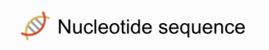

Geneious is a bioinformatics software that we will use to visualize the sequence data. While Geneious is an incredible platform, it is expensive. They offer a 1-month free trial and provide instructors with student access codes during semester sessions.
Once Geneious is downloaded on your home computer, learn about the software interface options before moving forward.
For manual genome annotation, the following uncompressed files are required to be imported into Geneious:
Genome in FNA format (*.fna)
Genome in GFF format (*.gff)
BAM files from the BLAST step of the cluster process.
Blast *gtf file
StringTie *.gft file
Once you have gathered the required files for Geneious you are ready to create a project folder in Geneious and import these files in the order listed above.
Right-click ‘Local” select the ’New Folder’ option, and name your folder based on the research project.
Importing files into Geneious requires some additional steps, files should be imported in your project folder in the proper order, as detailed in the steps below:
Drag your genome *fna file into the ‘Drop files here to import’ area of Geneious.
During the import process, Geneious will prompt a Grouping Sequences option. Select the ‘Keep sequences separate’ option.
Select All imported .fna files using the checkbox above the document table. Then drag and drop the genome *.gff file into the document table area.
Each BAM file must be imported onto the corresponding sequence file name.
Select a single sequence file (these files have the small DNA icon, see image below) then drag the BAM file on top of the highlighted sequencing file.

Import BAM files one at a time.
You will only have BAM files for sequence files that have been identified to have the genes of interest.
Once the BAM file has been imported, you will see a contig file below the sequence file. This file has an icon with three angled dashes (see image below).
Select all files and drop in the stringtie file.
Select all files and drop in the blastHIT .gtf file.
In this section, we will select settings used for visualization; however, there are many settings an options while working with annotations in Geneious. Review the Geneious User Manual to determine additional preferred settings for your project.
To start, select a single contig file from the document table. A contig view will appear in the Document Viewer area and to the right of the viewer is a settings panel (Figure 1). Note the six different icons on the right side. We will work through adjusting default settings for most options. Do not change default settings unless indicated in the process below:
Now you are ready to annotate this contig!
Please note that these setting adjustments will be done for each contig you are working on.